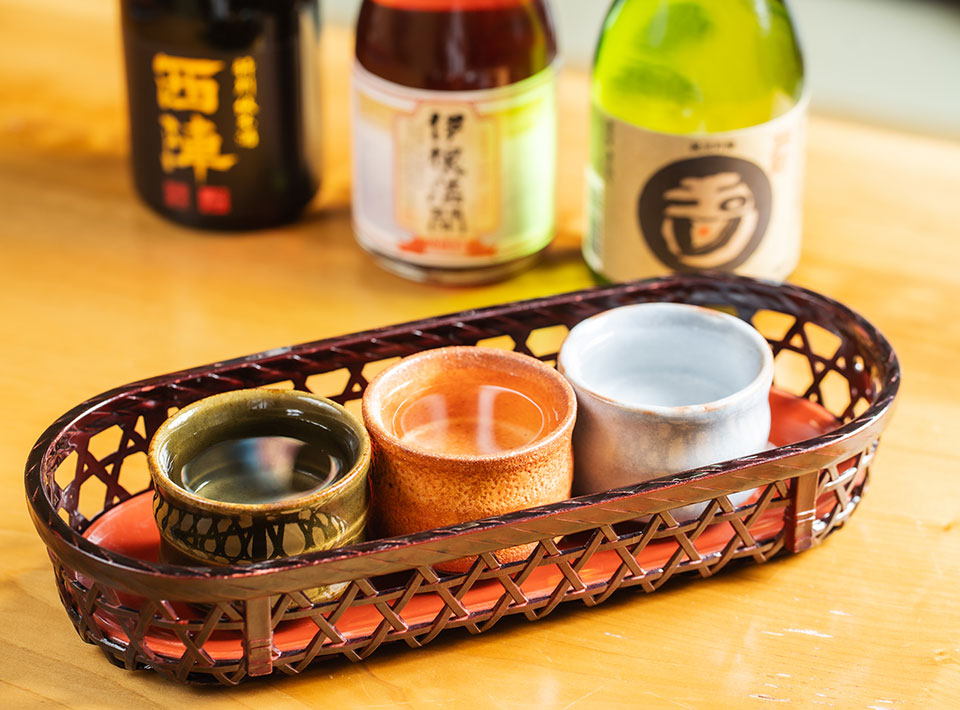
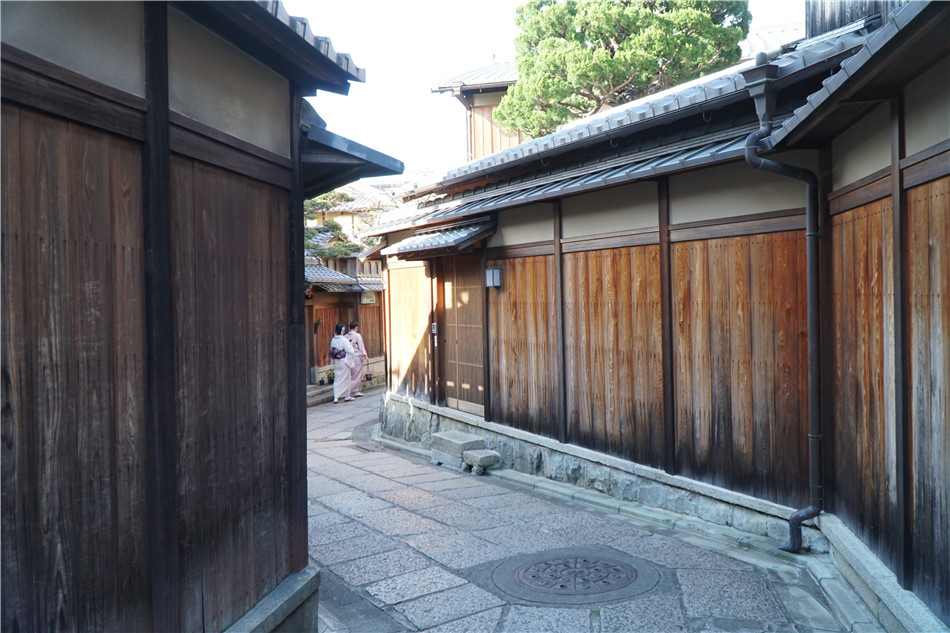

Gion beyond the postcard.
Lantern-lit lanes, wooden townhouses and living traditions. Discover the difference between geiko and maiko, the etiquette of the district and the stories hidden in Kyoto's old streets.

Old Kyoto, explained with care.
An evening can begin by Gion Shirakawa and Tatsumi Bridge, continue toward Hanamikoji, and wind through atmospheric Higashiyama lanes, Yasaka Shrine and the Yasaka Pagoda area. Your exact route depends on the time and your interests.
Ben explains traditional performing arts, shrine customs and the architecture of machiya townhouses with respect for local residents. A geiko sighting is never guaranteed; private-property and photography restrictions are always respected.

Frequently asked questions
Will we meet a geisha?
Gion is a working neighborhood, not a performance venue. Encounters cannot be promised, and we always follow local etiquette.
Can we start in the evening?
Yes, evening is a lovely time for the atmosphere. Availability and meeting details are confirmed personally.
Is this suitable for first-time visitors?
Absolutely. Ben explains the history in approachable English, with Mandarin Chinese also available.